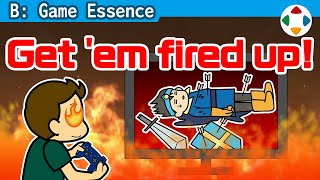
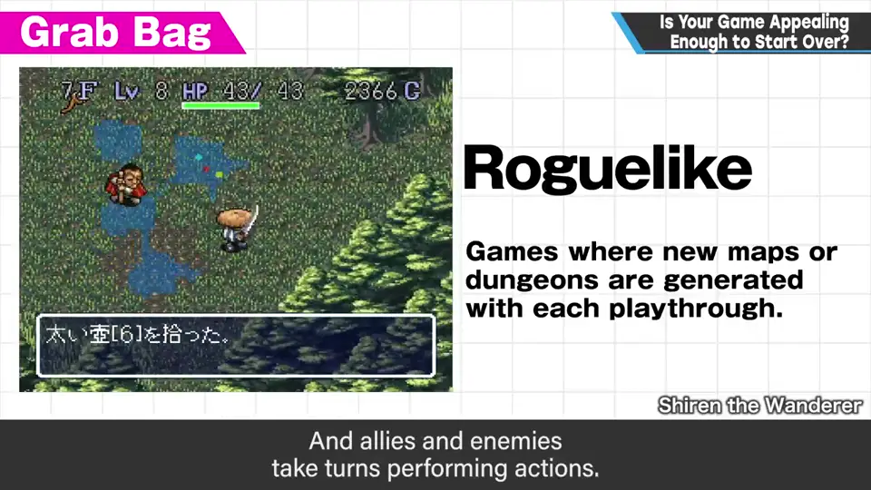
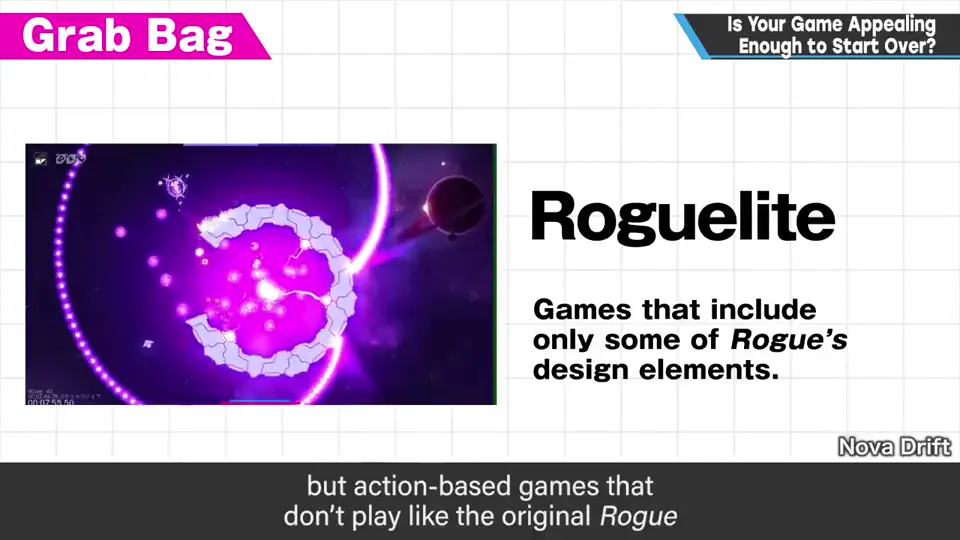
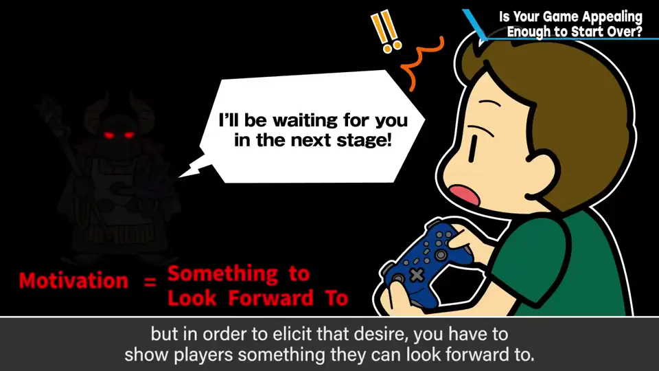
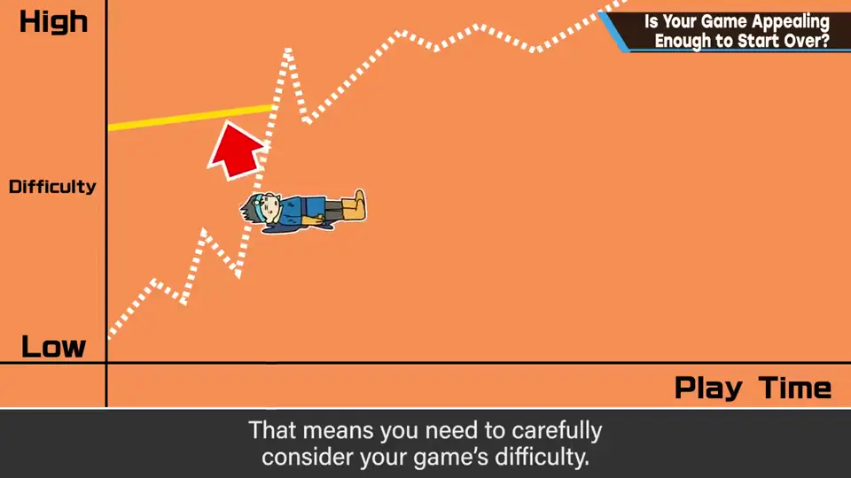
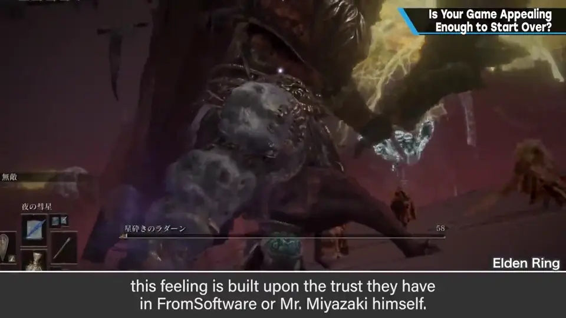

B-15 你的游戏值得一再重来吗？
原标题：Is Your Game Appealing Enough to Start Over?

速览
受《恶魔之魂》《黑暗之魂》系热卖的影响，2010 年代后半至今高难度游戏增多，尤其是永久死亡（permadeath）或类似机制——失败就重来，如 Roguelike、Roguelite。顺带解释：Roguelike 大致指迷宫和道具随机生成、死亡就重来、我方与敌方回合交替，类似 PC 早期的《Rogue》（1980），日本以《不可思议的迷宫》系列著名；Roguelite 指只含部分要素的作品，如类型不同的动作游戏；不过 Roguelite 这个词是后来才分的，全都叫 Roguelike 也无妨。「失败重来」很适合独立游戏：游戏本质上总得反复做类似的事，资源做不多的独立游戏用起来很方便。但请想想：玩家并不想一直重来、一直玩同样的东西。推进游戏需要动机，主要是「想看后面」；为此必须展示对后面的期待，游戏里需要让人想看下去的魅力。没魅力、没足够变化，没人会一直玩下去；难度也要照顾——卡关的人可能总看到同样的风景。《黑暗之魂》靠强烈的「想往前」推动，有人还基于对 FromSoftware 或宫崎英高的信任；只学系统、不做期待与动机的作品玩不下去。推进速度应由游戏体量、展开和内容决定，别因为别的游戏难、或熟练的自己勉强能过就定下来。樱井自己玩这类作品也常很早放弃——同样的时间不如接触更多作品。尤其要设想玩家在同一个地方反复死亡时的情况。
1. 高难度与「失败就重来」 0:02
受《恶魔之魂》《黑暗之魂》等热卖的影响，2010 年代后半至今高难度游戏越来越多，而且彼此影响、越来越多。尤其是永久死亡（permadeath）或类似机制——失误就重来的游戏，如 Roguelike、Roguelite，作为类型也很常见。
| 词 | 樱井的解释 |
|---|---|
| Roguelike | 大致是迷宫和道具随机生成、死亡就重来，我方与敌方回合交替；类似 PC 早期的《Rogue》，日本以《不可思议的迷宫》系列著名 |
| Roguelite | 含有其部分要素的作品；定义因人而异，类型与 Rogue 不同（如动作游戏）的大致就是 Roguelite。动作与演出爽快，每次失败后靠随机的装备、道具或展开提供不同体验，好评作品很多 |


不过 Roguelite 这个词是在出现时才产生的区分，樱井认为全都叫 Roguelike 也无妨。
2. 重来需要「想看后面」的动机 1:52
「失败就重来」非常适合独立游戏：游戏本质上总要反复做相似的事，对资源做不多的独立游戏来说很方便。
但请想一想：玩家也不想一直重来、一直玩同样的东西。推进游戏需要动机——主要是「想看后面」。要产生这种欲望，必须展示对后面的期待。


- 没有魅力、看不到足够的变化，玩家不可能一直做相似的游玩。
- 难度也需要照顾：卡关的人比预想多时，他们看到的可能总是同样的风景。
- 《黑暗之魂》等靠「想往前」的强烈心情推动；有些人还基于对 FromSoftware 或宫崎（英高）先生的信任。只模仿系统、不营造期待和动机的作品，玩不下去。

3. 别照搬难度 3:24
预想玩家多快能往前走，应该由游戏的体量、展开和内容决定。别因为别的游戏难，或者熟练的自己勉强能通关就 OK，而这样决定。
樱井经常玩游戏，但对这类作品老实说常常很早放弃：同样花时间，不如接触更多作品、获得新刺激。
自测题
1. 为什么「失败就重来」适合独立游戏？
游戏本质上就要反复做相似的事，这种机制对资源做不多的独立游戏很方便。 1:52
2. 玩家愿意一再重来，需要什么？
动机——主要是「想看后面」；为此游戏要展示对后面的期待、有魅力和足够的变化，难度也要照顾。 2:15
3. 樱井提醒开发者在设定难度时别怎么做？
别因为别的游戏难、或熟练的自己勉强能过就决定；推进速度应由体量、展开和内容决定，尤其要设想玩家在同一处反复死亡的情况。 3:30